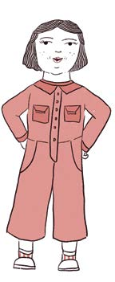
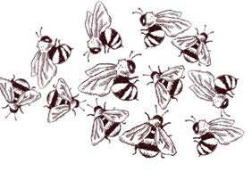
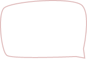
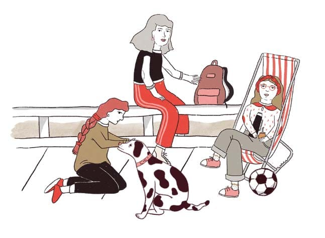

En sus orígenes los seres humanos se refugiaban en cavernas y se mudaban de un lugar a otro: eran nómades. Luego crearon chozas, ranchos, iglús, casas, y se volvieron sedentarios.
Igual que nuestros ANTEPASADOS nos seguimos REUNIENDO.
SOMOS GREGARIOS
Mi abuelo se llama
Gregorio.
Con el paso del tiempo, algunas personas fueron apropiándose de las tierras. Así empezaron a existir los dueños y la propiedad privada.
El planeta quedó dividido en países con presidentes y gobiernos.